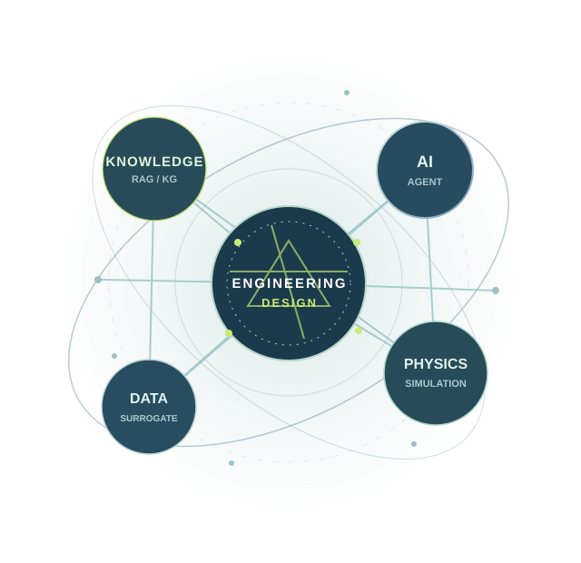

ENGINEERING · INTELLIGENCE · DESIGN
Dong-u
Shin.
Connecting engineering knowledge, physics, and AI to make better design decisions.
Mechanical Engineering · AI for Engineering Design

01 / RESEARCHKNOWLEDGE → DESIGN
INDEPENDENT RESEARCH PORTFOLIOSCROLL TO EXPLORE ↓
01 / ABOUT
Engineering questions.
Intelligent answers.
I work at the intersection of mechanical engineering, AI, and knowledge-driven decision support.
My goal is to connect reliable engineering evidence with data-driven modeling and design optimization.
02 / RESEARCH DIRECTION
Research Focus
Three connected directions for
AI-enabled engineering design.
Loading research areas…
03 / RESEARCH OUTPUT
Selected Publications
04 / ENGINEERING PORTFOLIO
Featured Projects
Research prototypes, computational
mechanics, and design systems.
05 / HIGHLIGHTS
Achievements & Milestones
06 / UPDATES
News & Activity
Research updates, notes, and recent activities. Add new entries in content/news.json.
07 / CONTACT
Let’s connect ideas
with engineering.
Open to conversations on knowledge-grounded AI, surrogate modeling, and engineering design.
sea7yy@naver.com ↗